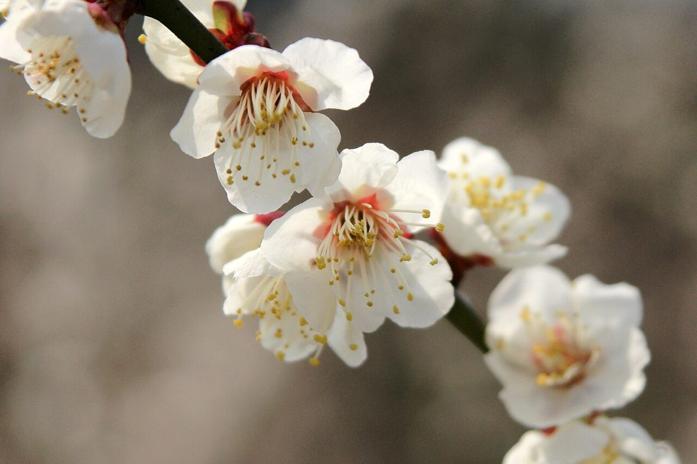
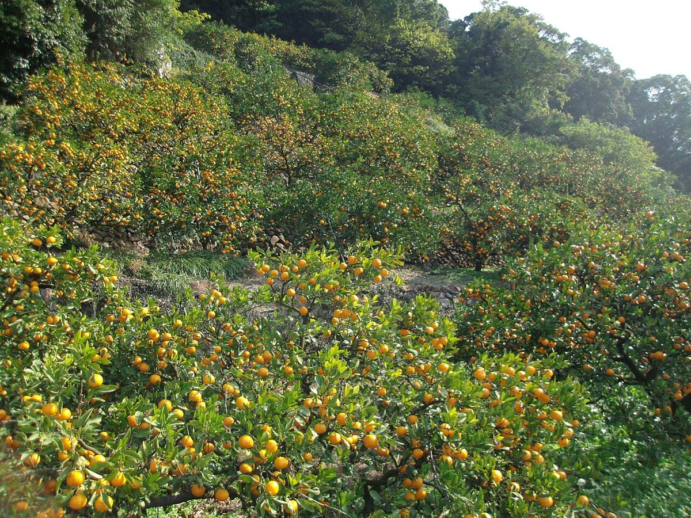
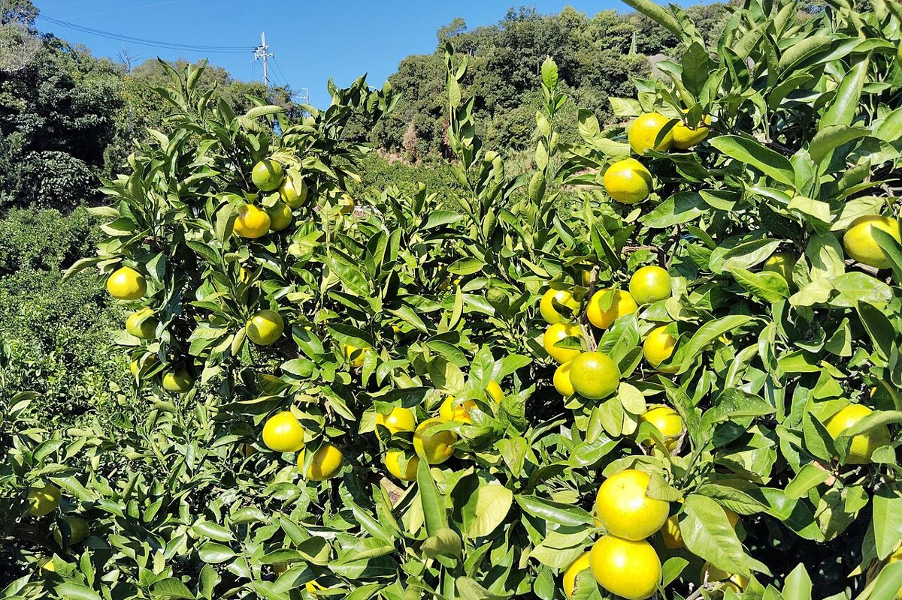

メニュー
現在、メニューの内容は準備中です。お問い合わせください。

メニュー準備中(お問い合わせください)
料金準備中(お問い合わせください)
掲載できる内容がそろい次第、ご案内します。


現在、メニューの内容は準備中です。お問い合わせください。

掲載できる内容がそろい次第、ご案内します。


掲載写真はフリー素材のイメージで、店舗の実際の様子ではありません。和歌山県内で撮影された風景写真を中心に使用していますが、他地域で撮影された写真や撮影地が不明な写真が含まれる場合があります。お店や周辺の実際の様子を示すものではありません。